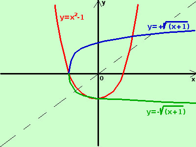

|
sviluppo Data la seguente funzione determinatene, se possibile, la funzione inversa indicandone anche le eventuali restrizioni nel dominio y = x2 - 1 La funzione e' definita in tutto ℜ, si tratta di una parabola nel piano con concavita' verso l'alto e vertice nel pinto (0;-1)  per trovarne l'inversa scambio tra loro x ed y x = y2 - 1 porto i termini con la y prima dell'uguale -y2 = - x - 1 cambio di segno y2 = x + 1 ricavo y y = ±√(x + 1) il suo dominio sarebbe l'insieme dei valori che rendono il radicando (termine sotto radice) positivo D = {x ∈ ℜ / x ≥ -1 } secondo la definizione questa non e' una funzione perche' preso un valore di x nel dominio ad esso non corrisponde un solo valore di y, ma ne corrispondono 2, uno positivo ed uno negativo; quindi la funzione non e' invertibile. Possiamo comunque anche considerarla come una coppia di funzioni,essendo ogni funzione uno dei due rami della parabola orizzontale Poiche' in matematica non si butta via niente, talvolta in questi casi si parla di funzione polidroma, cioe' tale che ad ogni valore di x corrispondano piu' valori di y, ma tali funzioni sono al di fuori del nostro piano di studi |